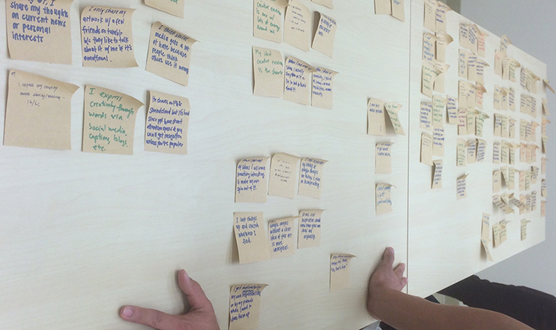
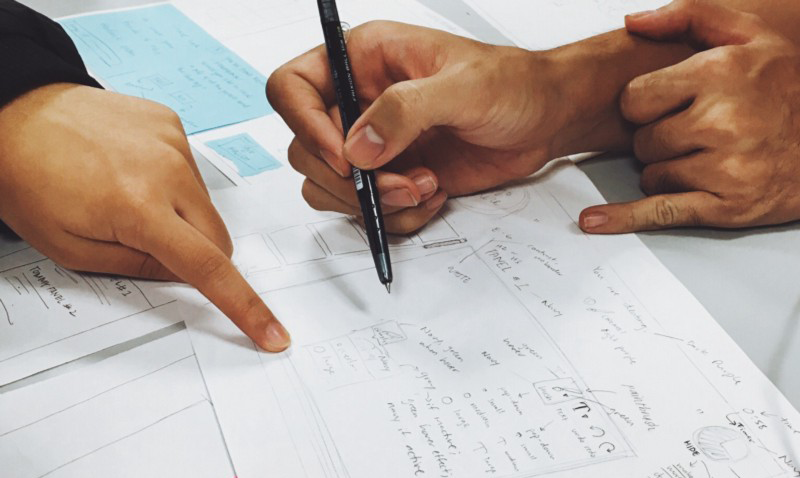
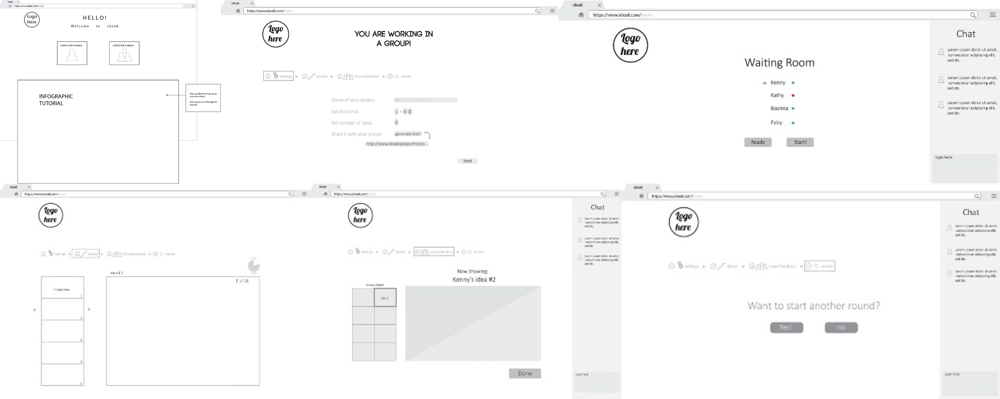
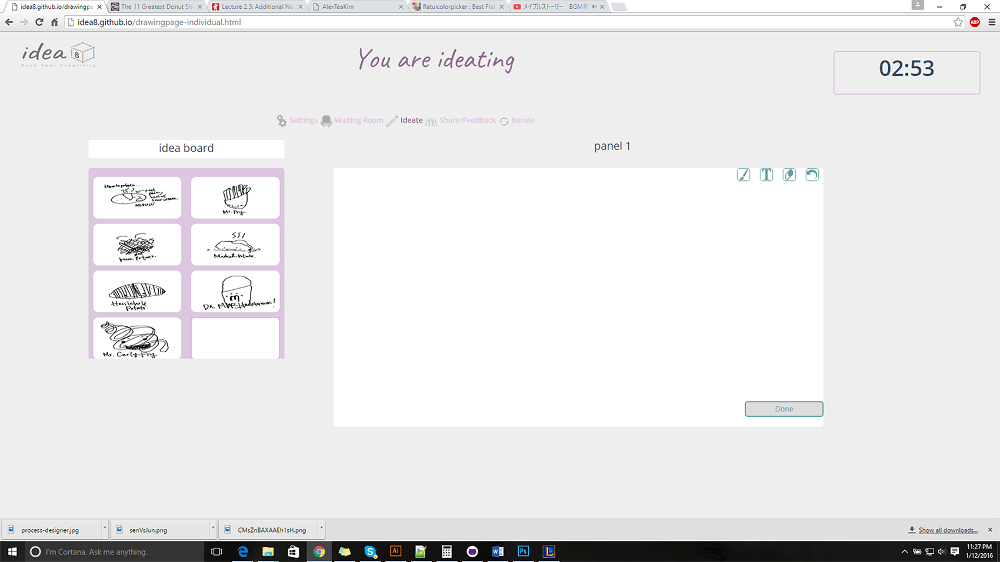
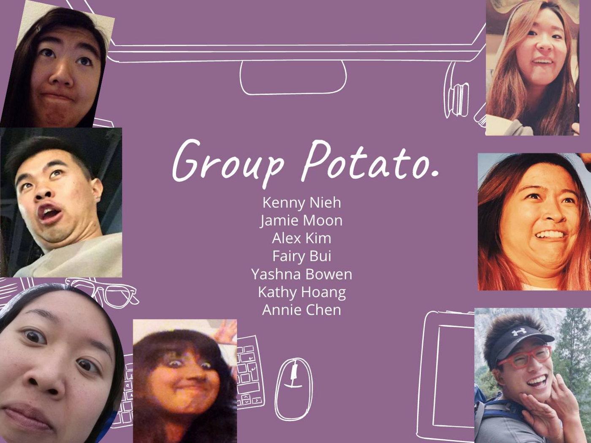

The Need
"A bad idea takes just as much time to implement as a good one."
- Unknown
It's hard being creative now-a-days. In a society where mottos like nike's "Just Do It" and YOLO seem to be ingrained in our culture, its no surprise that people look towards the easiest and fastest solutions in order to keep pace in this progressive life. But the quick and easy solutions are often times not the best. At idea 8 we urge users to take the extra time to weigh out their options and get creative!
Gathering the Intel
Our affinity diagram made from our user interviews
After spending time conducting interviews on our friends, colleagues, and room-mates on the topic of creativity, our team met back together to start designing a solution to our friends. Here is what we found:
- 1. Students are pressed for time.
- 2. Most people felt that they get the most creative when under pressure.
- 3. People felt that they would be motivated if they had peers with them.
Our idea!
After a long 5 weeks of brainstorming, user research, and data collection, our team finally came up with our website’s goal: a web version of Crazy 8s. Crazy 8s is a google design technique that designers use to rapidly brainstorm, collaborate, and iterate; allowing team-mates to feed off of each others creativity.
Who is idea8 for?
1. An Artist who needs inspiration
2. An engineering team that needs a creative solution
3. A writer with writer's block
4. Or a student org that is planning an event
5. Anyone who needs ideas!
Some of the personas we envisioned using our app.
Personas
Connor O’ Conner—individual User, age 20 Connor is using this product because he is a college student that wants to improve himself as a studio artist, so he wants to have a time constraint as a personal deadline to come with ideas quickly.
In this particular situation, he has inspiration to create a fantasy paradise but he doesn’t know what to include and how to execute it on a canvas. He uses Idea8 and sends to it friends for feedback. After analyzing the feedback he gets a better perspective on how his art is viewed and proceeds to start his project.
Kenny NeighNeigh—Project Manager, age 27 Kenny is using this product because he is on a time crunch and needs an efficient way to bring ideas together with his team. It is a large group so it’s hard for them to meet in person so they meet remotely to get feedback. As a project manager, he doesn’t have a lot of time so this ideation process needs to be quick.
In this particular situation, his team needs to make a new mobile app, but since he’s on a trip he emails the rest of his team to use Idea8 to come up with some ideas for this mobile app together at around 7pm that night. Since he is able to review these ideas with his team when he gets back, he can now focus with whatever he was supposed to do on that business trip without having to meet with the team personally.
Bashna Yowen—Team Member, age 19 Bashna is a brand new intern working under the same project that Kenny NeighNeigh is managing. As a CS major with more back-end experience, she is definitely new to the ideation design process. She was told to use this product one night when Kenny NeighNeigh was gone for a business trip.
In this particular situation, when she receives an email from Kenny about the ideation session, she clicks on the direct link at 7pm. She goes through the brief tutorial and feels like it’s really easy to use and all of her and her teammates’ ideas are coming all at once. By viewing her teammates’ works, she is able to think of many more ideas given the feedback from her own work as well. Since it was a quick process, she is able to sleep early.
Prototypes!
Our paper prototype in the making.
Testing and Feedback
Fun with testing.
Finally, we were able to test our low-fidelity prototype on some people. Although it was a time of improvisation, confusion, and a lot of explanation, we were able to receive a lot of feedback about what was confusing and what users didn’t like. We were able to find areas of improvement. The user testing gave us a brand new perspective on our website.
Pros:
- -idea of having something that will force a group of people to collaborate on somewhat of their own time frame
- -informative structure always tells where the user is in the process
- -simple & easy to use format
Cons:
- -confusion of whether time limit is for one panel or all panels
- -chatroom can get confusing & can’t tell if someone leaves or not
- -show to schedule when to use the website (would users need to use whenisgood or would we have that functionality built in)
- -no dashboard to save users things
Redesigning idea8 with the info we got from user testing
High-Fidelity Prototype (skeleton)
With the data we got from testing our paper prototypes and figuring out the best way to redesign our product I created a high-fidelity prototype using Adobe Illustrator.
Testing! (again)
We had the opportunity to conduct user testing with our TAs, Dan and Charu, while Professor Boyle supervised. We also got to meet up with another group on Saturday to exchange user testing.

FeedBack
- -Confusion about how we facilitate group interaction through our websites
- -Some icons/functions are not intuitive or too ambiguous in how they should be used.
- -Missing some interactions and features that would make the website easier to use, such as a “back” button.
- -Time, Chat, and Settings option are confusing in how they are presented.
Points that Need to be Refined
- -Does this all have to be in real time (in regards to group collaboration)?
- -If it is real time, how to ensure people work at the same time?
- -If the boards disappear, how can people collaborate together?
- -How to facilitate group member discussion
- -Time window in which the information is viewable
Feature Suggestions
- -Social media share buttons
- -Save option, as there is no dashboard server or user accounts
- -Create button, how do you start a new round, navigate process and when to stop
- -Option to save panels into PDF
Branding + Style
After we finished making tweaks on our product and felt that it was good to go for our final presentation we sat down to think about the image and style of our product. This meant that we needed to create a logo, find suitable colors, and make appropriate icons. It also meant we had to start the design process once again, only this time it was for our aesthetic.
^our final logo.
Idea8
Our end product ended up having to use alot of "wizard of oz" techniques because we did not have access to comp sci team so full functionality and databases were missing. but we did make a rough look of what our project hoped to be with our focus being on user friendliness and interactive.
Future
Ten weeks is definitely not enough time to create a perfectly working website, and we accepted the possibility of having to “Wizard of Oz” some
of the more complex features of idea8. One feature that we would have liked to include were user accounts, so that users could later access all of
their ideas in a convenient place. Feedback completion cues such as checkmarks could have also facilitated the feedback-giving process and improved on the user experience.
